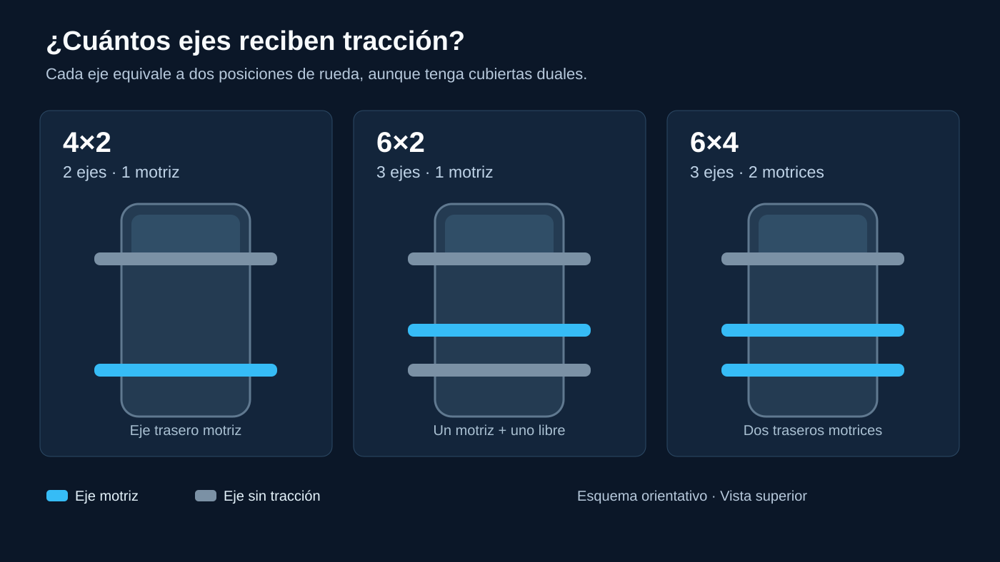

Cuando una ficha dice 6×4, no está describiendo la cilindrada, la potencia ni el tamaño de la caja. Habla de la configuración de ruedas y tracción. El primer número cuenta las posiciones de rueda del vehículo y el segundo, las posiciones impulsadas por el motor. En un camión convencional 6×4 hay tres ejes: uno delantero direccional y dos traseros motrices. La explicación oficial del Mercedes-Benz Arocs confirma esa disposición.
En Argentina esta notación aparece al comparar tractoras, volcadores, chasis para carrozar y unidades usadas. Entenderla ayuda a elegir un vehículo para la tarea y también a pedir piezas correctas. Pero es solo el comienzo: dos camiones 6×4 pueden tener puentes, relaciones de diferencial, suspensiones y capacidades homologadas diferentes.
Cómo se leen los dos números
La primera cifra no cuenta cada neumático individual. Cuenta posiciones de rueda: dos por eje. Por eso un eje trasero con ruedas duales sigue aportando dos posiciones a la nomenclatura, aunque lleve cuatro cubiertas. La segunda cifra indica cuántas de esas posiciones reciben fuerza motriz. En la práctica, un eje motriz aporta dos posiciones impulsadas.
Así, 4×2 equivale a dos ejes y uno motriz; 6×2, a tres ejes y uno motriz; y 6×4, a tres ejes con dos motrices. El signo “×” se lee “por”, pero no es una multiplicación. Tampoco significa que un 6×4 tenga seis ruedas físicas: la cantidad de neumáticos puede aumentar por las ruedas duales.

4×2: dos ejes, una transmisión más simple
En un 4×2 habitual el eje delantero dirige y el trasero impulsa. La propia ficha del Arocs lo describe como un vehículo de dos ejes con un eje trasero propulsado. Es frecuente en aplicaciones donde la operación, la distribución de carga y las condiciones del camino permiten trabajar con dos ejes.
Su arquitectura puede implicar menos componentes de transmisión y menos peso propio que una versión con dos ejes motrices comparables. Eso no demuestra por sí solo que gaste menos en cualquier ruta: la carga, la relación de transmisión, el motor, el conductor y el recorrido también influyen. Tampoco se debe deducir su carga útil sin consultar la versión y los límites aplicables.
6×2: tres ejes, pero solo uno empuja
El 6×2 suma un tercer eje sin convertirlo necesariamente en motriz. Un eje trasero transmite la potencia y el otro ayuda a soportar y distribuir la carga. Ese eje adicional puede estar delante o detrás del motriz según el diseño; algunas variantes son elevables y otras direccionales. Volvo distingue expresamente las configuraciones 6×2 con eje pusher (delante del motriz) y con eje tag (detrás).
La ventaja buscada suele ser repartir carga sobre tres ejes sin incorporar un segundo puente motriz. Frente a un 4×2, el tercer eje cambia pesos y maniobrabilidad; frente a un 6×4, normalmente deja menos ruedas con capacidad de tracción. En piso firme eso puede ser suficiente. Sobre tierra suelta, barro o una rampa resbaladiza, la diferencia puede hacerse evidente.
Un 6×2 no es una sola receta. La posición del eje auxiliar, si eleva, si gira y cómo se gestionan las cargas dependen de la versión. Por eso conviene mirar la ficha técnica antes de generalizar sobre radios de giro, desgaste de neumáticos o comportamiento con el camión descargado.
6×4: tres ejes y dos puentes motrices
En el 6×4, los dos ejes posteriores reciben tracción. Es una configuración útil cuando el trabajo requiere arrancar con carga en superficies de adherencia variable, subir pendientes o salir de una obra. Volvo Trucks recomienda evaluar peso combinado, topografía y misión, y señala que sumar ejes motrices puede mejorar la tracción. No significa que el vehículo sea invencible: neumáticos, reparto de peso y estado del terreno siguen siendo decisivos.
El segundo puente motriz añade componentes a mantener: transmisión entre ejes cuando la lleva, diferenciales, bloqueos y lubricantes según el diseño. También puede agregar peso propio y afectar el consumo respecto de una alternativa 6×2 equivalente. La magnitud real depende de la unidad y de la operación; no existe una penalización fija válida para todos los modelos.
Muchos 6×4 tienen bloqueos de diferencial o entre ejes, pero su presencia y funcionamiento deben verificarse en el equipo. Un bloqueo no convierte a un 6×4 en un 6×6: el eje delantero sigue sin propulsión en la configuración convencional. Su uso debe respetar el manual, especialmente al volver a pavimento con buena adherencia.
La diferencia que más importa al trabajar
Para una flota de ruta que circula casi siempre sobre asfalto, el eje auxiliar de un 6×2 puede ayudar a distribuir carga sin llevar dos puentes de tracción. Para un volcador que entra repetidamente a una cantera, un 6×4 puede dar más margen para iniciar la marcha sobre suelo difícil. Y un 4×2 puede ser adecuado cuando la tarea no necesita el tercer eje. Son criterios de selección, no equivalencias automáticas entre configuración y uso.
Hay que separar tracción de capacidad legal de carga. La carga admisible depende del vehículo homologado, las cargas por eje, sus neumáticos, el conjunto con acoplado o semirremolque y la normativa de la ruta y jurisdicción. Un tercer eje no habilita a cargar cualquier cantidad, y el segundo eje motriz de un 6×4 no aumenta por sí solo la carga legal frente a todo 6×2.
Qué mirar antes de elegir entre 4×2, 6×2 y 6×4
- Ruta real: porcentaje de asfalto, ripio, barro, pendientes y entradas a obra.
- Carga y carrozado: peso por eje en vacío y cargado, además del peso propio de la configuración.
- Operación: maniobras, arranques con carga, kilometraje anual y tiempo fuera de ruta.
- Ficha técnica: capacidad homologada, entre ejes, suspensión, neumáticos y relación de diferencial.
- Costo completo: combustible, neumáticos, peajes cuando corresponda, mantenimiento y disponibilidad de repuestos.
Una prueba en la ruta habitual, con una carga representativa y dentro de los límites permitidos, vale más que comparar números aislados de catálogo. También ayuda registrar consumo y comportamiento con el mismo criterio en las alternativas evaluadas.
Por qué importa al pedir repuestos
Decir solo “es un camión de tres ejes” puede llevar a una pieza equivocada. Un 6×2 y un 6×4 no comparten necesariamente la misma disposición de puentes, árboles de transmisión, soportes, suspensión o sistema de frenos. Incluso dentro de los 6×4, dos generaciones pueden usar componentes distintos.
Al consultar por un repuesto, conviene tener número de chasis (VIN), marca, modelo, año, configuración 4×2/6×2/6×4 y número o placa del eje cuando corresponda. Si se trata de transmisión, también pueden importar la relación de diferencial y el lado o posición del puente. Es información que reduce errores de identificación y evita comparar piezas parecidas que no son intercambiables.
En pocas palabras
4×2: dos ejes, uno motriz. 6×2: tres ejes, uno motriz y uno adicional no propulsado. 6×4: tres ejes, dos traseros motrices. La elección se decide por la tarea, no por considerar que el número más alto sea siempre mejor. Tracción, carga legal, costo y facilidad de mantenimiento son preguntas distintas; una buena especificación las responde por separado.